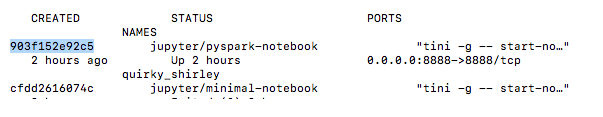

Starting up container
Contents
Starting up container#
#docker #start #container #run #interactive
Starting up the Docker container#
docker run --hostname=<host name>
--ip <IPv4 i.e. 10.1.2.3>
--privileged=true
--name <name of container>
-t
-i
-v <local working directory>
[OPTIONS]
[IMAGE]
/usr/bin/docker-quickstart
Common options#
it- runs Docker interactively (so you get a pseudo-TTY with STDIN)-iis short for--interactive-tset TTY to the docker container, it is as if you are inside the shell for the docker container. The stdout for the docker container is piped to your current shell and your input is piped to the docker container.
stdin, stdout, and ttysare related concepts.stdinandstdoutare the input and output streams of a process. A pseudo terminal (also known as aTTYor aPTS) connects a user’s “terminal” with thestdinandstdoutstream, commonly (but not necessarily) through a shell such asbash. I use quotes around “terminal” since we really don’t use a terminal in the same sense today. https://stackoverflow.com/questions/22272401/what-does-it-mean-to-attach-a-tty-std-in-out-to-dockers-or-lxc
d- runs the container in the background, so-calleddetached mode(Optional).
When is on you don’t see the logs. You will find it by typing: docker logs container-name
p <PORT>- map any other ports (Optional)v- This makes it so notebooks we create are accessible in our folder on our local computer. It also allows us to make additional files such as data sources (e.g., CSV, Excel) accessible to our Jupyter notebooks. See: Accessing data outside container
Common use case#
docker run -itd <docker_image>
Others options#
-hostnameOptional: is a parameter which can be given along withdocker runcommand which will set the specified name as containers hostname-ipOptional: is parameter to set specific ip address(ipv4) to that particular container.-privileged=trueRequired: for HBase, MySQL-backed Hive metastore, Hue, Oozie, Sentry, and ClouderaManager, and possibly othersiRequired: if you want to use the terminal, either immediately or attach latertRequired: once services are started, a Bash shell takes over and will die without this-rmcauses Docker to automatically remove the container when it exits.-namegives the container the name , which allows us to refer to the container by name instead of ID in the future.edefines key value pairs to set in the container’s environment when it starts up
Example with PySpark:
docker run -it
-p 8888:8888
-v "$(pwd):/home/jovyan/work" jupyter/pyspark-notebook
--name spark
The -v $PWD:/home/jovyan/work allows us to map our spark-docker folder (which should be our current directory - $PWD) to the container’s /home/joyvan/work working directory (i.e., the directory the Jupyter notebook will run from).
Stopping container#
#stop
docker stop <container name or id>
docker container kill CONTAINERto forcefully stop a running container
docker container rm CONTAINER to remove a container
Starting up you docker container again:#
Once you have started and exited out of your docker container the first time, you will start it differently for future uses since the container has already been run.
If you do not know the name of the container, you can easily find it with: docker ps or docker container ls.
Pass the following command to return all container names:
docker ps -a
Get the container id from the terminal:

Then run docker start with the container id to start the container:
docker start <container name or id i.e 903f152e92c5>
docker container rm CONTAINER to remove a container
docker inspect CONTAINER to view detailed information about a running container
Accessing data outside container | Manage containers
Source:#
http://ondata.blog/articles/getting-started-apache-spark-pyspark-and-jupyter-in-a-docker-container/
https://spin.atomicobject.com/2018/10/04/docker-command-line/
How to Use Docker Run Command with Examples (phoenixnap.com)
https://stackoverflow.com/questions/36249744/interactive-shell-using-docker-compose